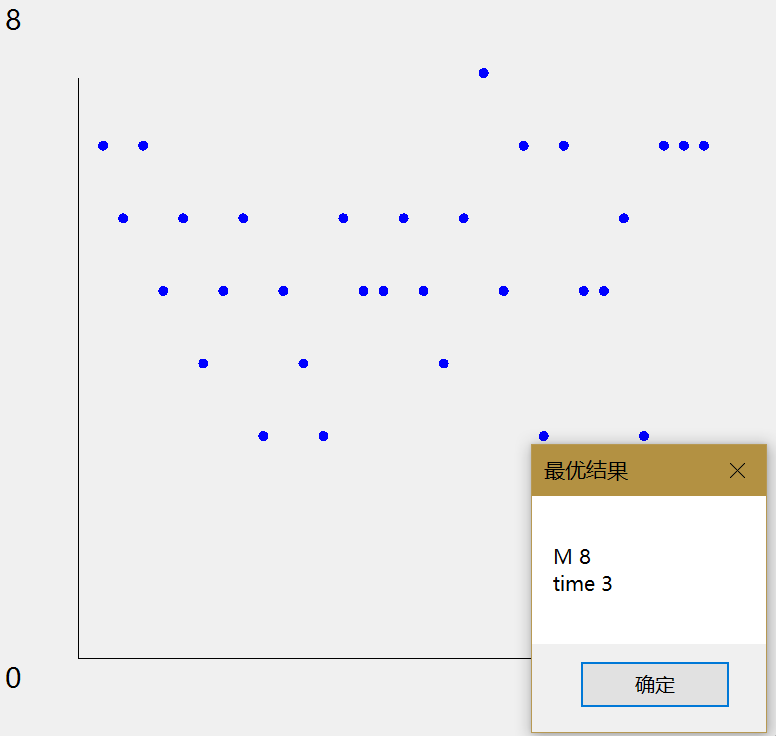
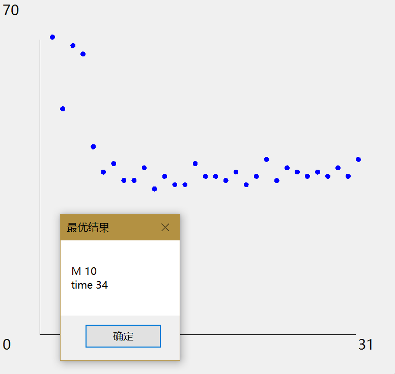

© 2019 《算法（第四版）》C# 题解 | Provided By 沈星繁
搜索解答
目前已完成到 3.1
2.3.25
上次更新：2019-06-20
发现了题解错误/代码缺陷/排版问题？请点这里：如何：提交反馈 。
解答
切换到插入排序的实现比较简单，在类内添加一个成员变量 M，在 Sort 方法里添加如下代码：
protected void Sort<T>(T[] a, int lo, int hi) where T: IComparable<T>
{
if (hi <= lo) // 别越界
return;
if (hi - lo <= this.M)
{
// 调用插入排序
for (int i = lo; i <= hi; i++)
for (int k = i; k > lo && Less(a[k], a[k - 1]); k--)
Exch(a, k, k - 1);
return;
}
int j = Partition(a, lo, hi);
Sort(a, lo, j - 1);
Sort(a, j + 1, hi);
}
下面放上实验结果：
N=1000
N=10000

N=100000

N=1000000
小于 8 的 M 值会比较合适。
代码
这里使用了 Background Worker 来防止程序失去响应，更多信息可以看 「另请参阅」部分。
using System;
using System.ComponentModel;
using System.Drawing;
using System.Linq;
using System.Windows.Forms;
using Quick;
namespace _2._3._25
{
public partial class Form2 : Form
{
/// <summary>
/// 测试数组大小。
/// </summary>
public int N = 100;
public Form2(int n)
{
InitializeComponent();
this.N = n;
}
/// <summary>
/// 启动页面时启动后台测试。
/// </summary>
/// <param name="sender"></param>
/// <param name="e"></param>
private void Form2_Shown(object sender, EventArgs e)
{
this.Text = "正在绘图";
this.backgroundWorker1.RunWorkerAsync();
}
/// <summary>
/// 后台测试方法。
/// </summary>
/// <param name="sender"></param>
/// <param name="e"></param>
private void backgroundWorker1_DoWork(object sender, DoWorkEventArgs e)
{
BackgroundWorker worker = sender as BackgroundWorker;
QuickSortInsertion quickSortInsertion = new QuickSortInsertion();
double[] timeRecord = new double[31];
for (int i = 0; i <= 30; i++)
{
worker.ReportProgress(i * 3);
quickSortInsertion.M = i;
int[] data = SortCompare.GetRandomArrayInt(this.N);
timeRecord[i] = SortCompare.Time(quickSortInsertion, data);
}
e.Result = timeRecord;
}
/// <summary>
/// 更新后台进度方法。
/// </summary>
/// <param name="sender"></param>
/// <param name="e"></param>
private void backgroundWorker1_ProgressChanged(object sender, ProgressChangedEventArgs e)
{
this.Text = "正在绘图，已完成 " + e.ProgressPercentage + " %";
}
/// <summary>
/// 测试完毕，进行绘图的方法。
/// </summary>
/// <param name="sender"></param>
/// <param name="e"></param>
private void backgroundWorker1_RunWorkerCompleted(object sender, RunWorkerCompletedEventArgs e)
{
if (e.Error != null)
{
MessageBox.Show(e.Error.Message);
}
double[] result = e.Result as double[];
Graphics graphics = this.CreateGraphics();
// 获得绘图区矩形。
RectangleF rect = this.ClientRectangle;
float unitX = rect.Width / 10;
float unitY = rect.Width / 10;
// 添加 10% 边距作为文字区域。
RectangleF center = new RectangleF
(rect.X + unitX, rect.Y + unitY,
rect.Width - 2 * unitX, rect.Height - 2 * unitY);
// 绘制坐标系。
graphics.DrawLine(Pens.Black, center.Left, center.Top, center.Left, center.Bottom);
graphics.DrawLine(Pens.Black, center.Left, center.Bottom, center.Right, center.Bottom);
graphics.DrawString(result.Max().ToString(), this.Font, Brushes.Black, rect.Location);
graphics.DrawString(result.Length.ToString(), this.Font, Brushes.Black, center.Right, center.Bottom);
graphics.DrawString("0", this.Font, Brushes.Black, rect.Left, center.Bottom);
// 初始化点。
PointF[] bluePoints = new PointF[result.Length];
unitX = center.Width / result.Length;
unitY = center.Height / (float)result.Max();
for (int i = 0; i < result.Length; i++)
{
bluePoints[i] = new PointF(center.Left + unitX * (i + 1), center.Bottom - (float)(result[i] * unitY) - 10);
}
// 绘制点。
for (int i = 0; i < result.Length; i++)
{
graphics.FillEllipse(Brushes.Blue, new RectangleF(bluePoints[i], new Size(10, 10)));
}
graphics.Dispose();
this.Text = "绘图结果";
int min = 0;
for (int i = 0; i < result.Length; i++)
{
if (result[i] < result[min])
min = i;
}
string report = "M " + min + "\r\ntime " + result[min];
MessageBox.Show(report, "最优结果");
}
}
}
快速排序类
using System;
using System.Diagnostics;
using Quick;
namespace _2._3._25
{
/// <summary>
/// 快速排序类。
/// </summary>
public class QuickSortInsertion : BaseSort
{
/// <summary>
/// 切换到插入排序的阈值。
/// </summary>
public int M { get; set; }
/// <summary>
/// 默认构造函数。
/// </summary>
public QuickSortInsertion()
{
this.M = 8;
}
/// <summary>
/// 用快速排序对数组 a 进行升序排序。
/// </summary>
/// <typeparam name="T">需要排序的类型。</typeparam>
/// <param name="a">需要排序的数组。</param>
public override void Sort<T>(T[] a)
{
Shuffle(a);
Sort(a, 0, a.Length - 1);
Debug.Assert(IsSorted(a));
}
/// <summary>
/// 用快速排序对数组 a 的 lo ~ hi 范围排序。
/// </summary>
/// <typeparam name="T">需要排序的数组类型。</typeparam>
/// <param name="a">需要排序的数组。</param>
/// <param name="lo">排序范围的起始下标。</param>
/// <param name="hi">排序范围的结束下标。</param>
protected void Sort<T>(T[] a, int lo, int hi) where T: IComparable<T>
{
if (hi <= lo) // 别越界
return;
if (hi - lo <= this.M)
{
// 调用插入排序
for (int i = lo; i <= hi; i++)
for (int k = i; k > lo && Less(a[k], a[k - 1]); k--)
Exch(a, k, k - 1);
return;
}
int j = Partition(a, lo, hi);
Sort(a, lo, j - 1);
Sort(a, j + 1, hi);
}
/// <summary>
/// 对数组进行切分，返回枢轴位置。
/// </summary>
/// <typeparam name="T">需要切分的数组类型。</typeparam>
/// <param name="a">需要切分的数组。</param>
/// <param name="lo">切分的起始点。</param>
/// <param name="hi">切分的末尾点。</param>
/// <returns>枢轴下标。</returns>
private int Partition<T>(T[] a, int lo, int hi) where T : IComparable<T>
{
int i = lo, j = hi + 1;
T v = a[lo];
while (true)
{
while (Less(a[++i], v))
if (i == hi)
break;
while (Less(v, a[--j]))
if (j == lo)
break;
if (i >= j)
break;
Exch(a, i, j);
}
Exch(a, lo, j);
return j;
}
/// <summary>
/// 打乱数组。
/// </summary>
/// <typeparam name="T">需要打乱的数组类型。</typeparam>
/// <param name="a">需要打乱的数组。</param>
private void Shuffle<T>(T[] a)
{
Random random = new Random();
for (int i = 0; i < a.Length; i++)
{
int r = i + random.Next(a.Length - i);
T temp = a[i];
a[i] = a[r];
a[r] = temp;
}
}
}
}